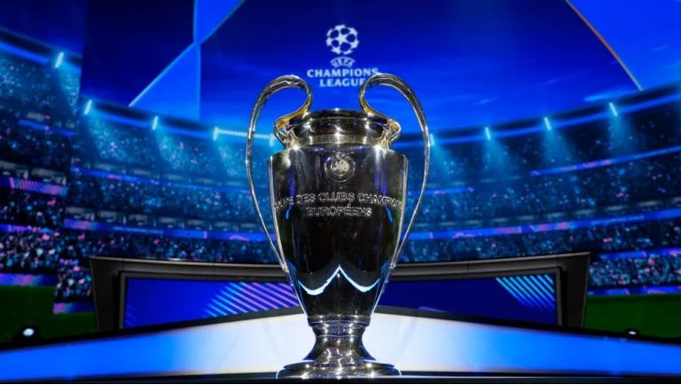

Nuevo formato de la champions league 2024/25
2/07/2024
A partir de la temporada 2024/25, la UEFA Champions League tendrá un nuevo formato.
1. Fase de liga: Se elimina la fase de grupos tradicional. En su lugar, habrá una fase de liga con 36 equipos.
2. Número de partidos: : Cada equipo jugará ocho partidos en esta fase, enfrentándose a ocho rivales diferentes (cuatro en casa y cuatro fuera)
3. Clasificación: Los ocho primeros equipos de esta fase avanzarán directamente a los octavos de final. Los equipos que terminen entre el noveno y el vigésimo cuarto lugar jugarán un Play-Off a ida y vuelta para determinar los otros ocho clasificados.
4. Días de competencia: Además de los tradicionales martes y miércoles, se agregarán los jueves como día de competencia
Este nuevo formato busca aumentar la competitividad y ofrecer más partidos emocionantes desde el inicio del torneo.